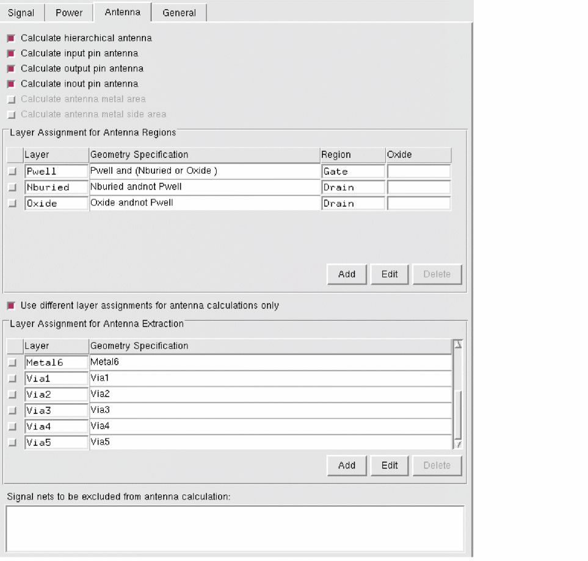
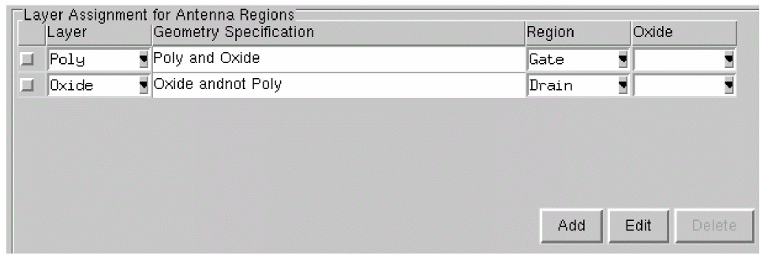
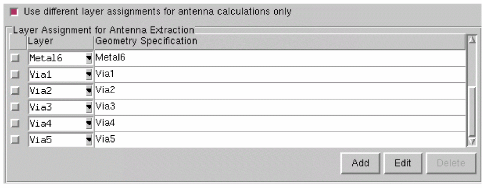

Processing Antenna Information in Standalone Abstract Generator
To access the Antenna tab in the Running step Extract form:
-
Choose Flow – Extract and click the Antenna tab in the Running step Extract form.
The options on this tab let you create process antenna information for custom blocks and standard cells. By default, all the options on this tab are off. - Choose one of the following options on the Antenna tab for calculating process antenna data:
-
Select Layer Assignment for Antenna Regions to assign layers to antenna regions for identifying the gate and drain regions and to enable antenna calculation. This table is enabled when at least one of the calculate antenna options is active.
 - Use the Add, Edit, and Delete buttons and the G-Spec Builder Form in conjunction with the operators to work with the Layer Assignment for Antenna Regions table.
-
Select Use different layer assignments for antenna calculations only to set layer assignments for antenna extraction different from those set for signal net extraction set on the Signal and Antenna tabs.
This option activates the Layer Assignment for Antenna Extraction table and consequently over-rides any Layer Assignment for Signal Extraction option settings.
The columns of this table are described below. - Use the Add, Edit, and Delete buttons and the G-Spec Builder Form in conjunction with the operators to work with the Layer Assignment for Antenna Extraction table.
- Select Signal nets to be excluded from antenna calculation to specify the nets that should not be considered for antenna extraction and therefore, lets you avoid antenna calculations for the specified pins.
Related Topics
Antenna Calculation by Abstract Generator
FinFET Support in Abstract Generator
FDSOI Support in Abstract Generator
Return to top